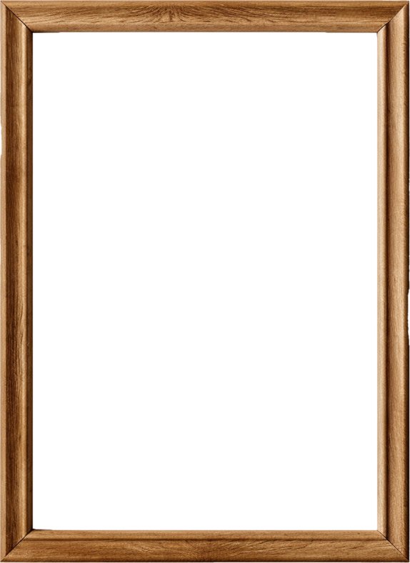

Fejl 404
Laura Kruuse
Den forsvundne side, 2026
Akryl, tørrede blomster og et lille tomrum på lærred
Den side, du leder efter, hænger her ikke. Måske er den solgt, flyttet til en anden væg eller aldrig blevet malet færdig.
Solgt (formentlig)